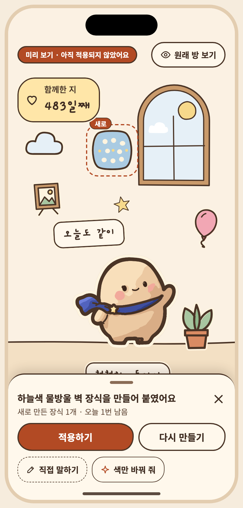
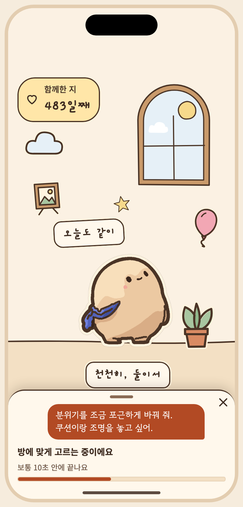
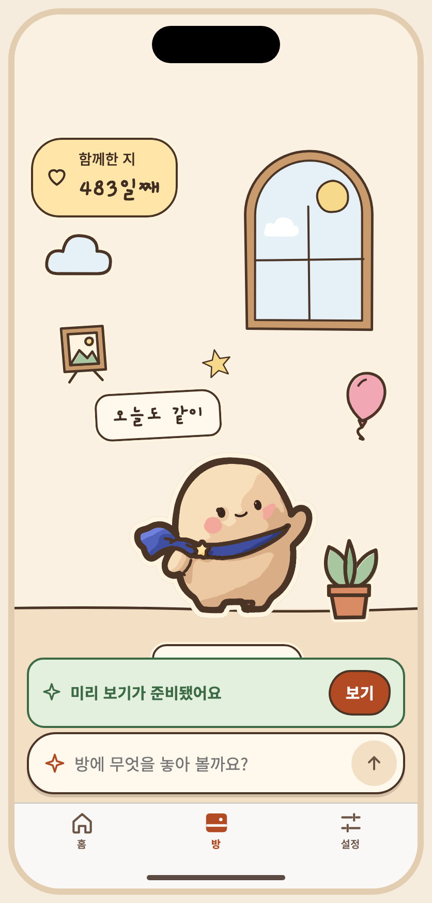
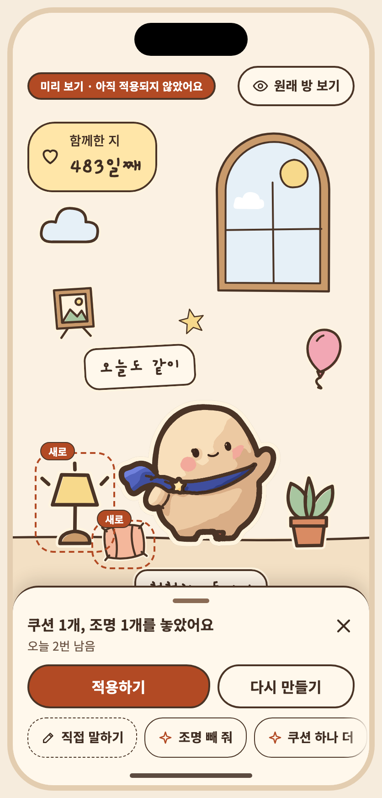
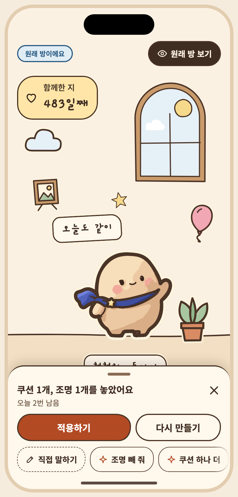
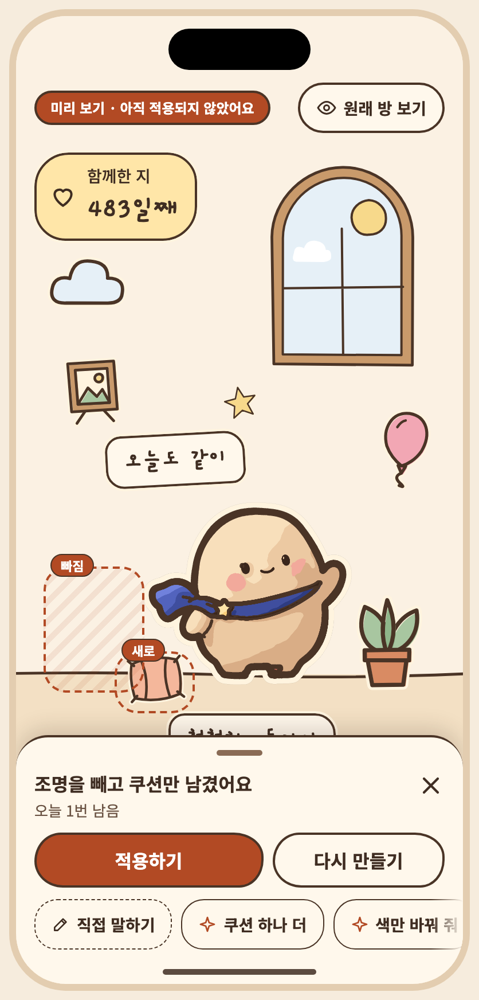
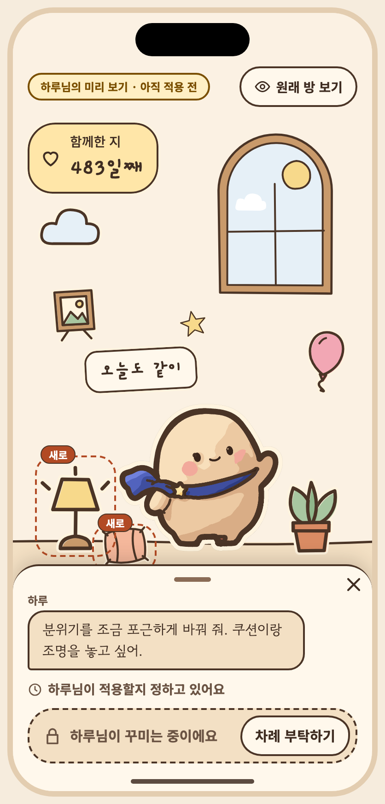
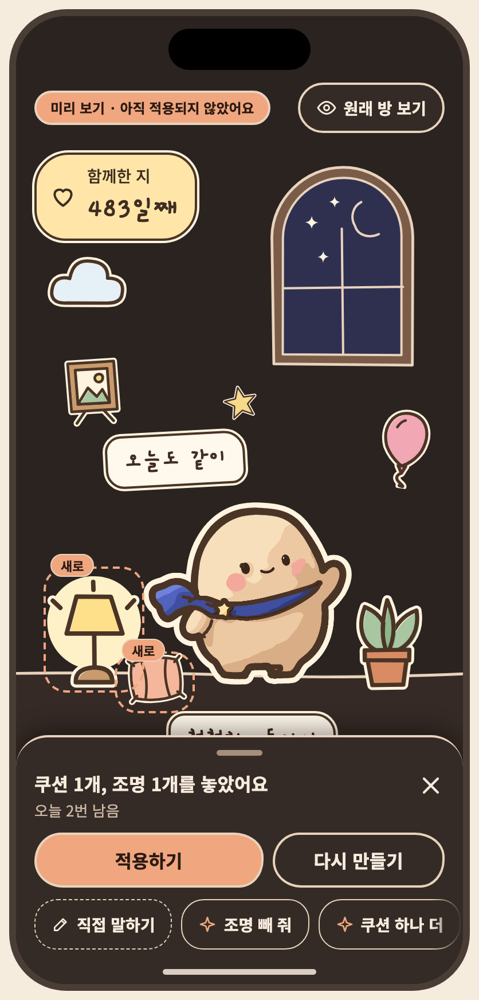
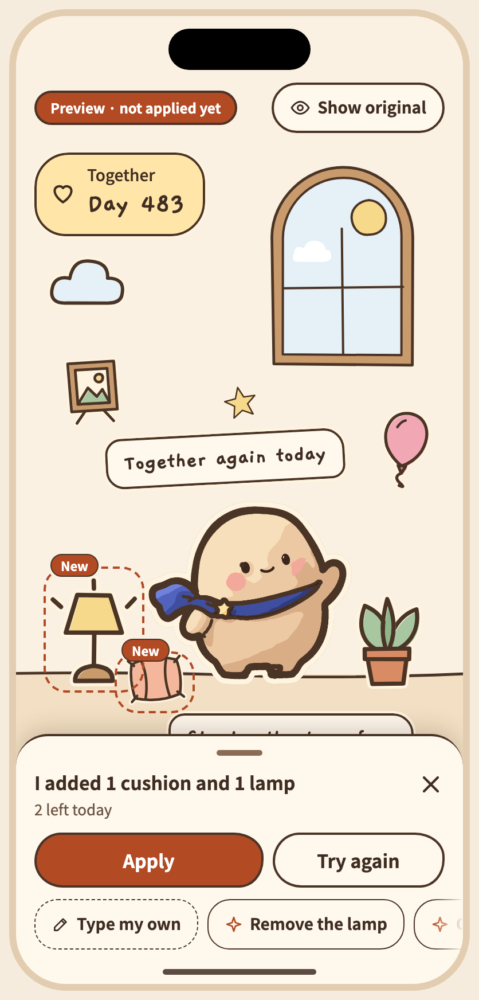

아티팩트 정본의 저장소 미러 · 버전 1794387715-f47d · 생성 파일은 수정하지 마세요. 상태 명세와 PNG는 아티팩트에 비해 오래되었을 수 있습니다. 아티팩트










# S09 공유 미리 보기 / 적용 확인·취소
승인자: 미승인
승인일: 미정
## 목적, ID, 경로
ID: S09
Route: /prompt (panel)
## 디자인 원본
- [S09-preview-confirm.dc.html](../../../canvas/project/S09-preview-confirm.dc.html)
## 이미지
- [S09-gen-preview__ios-day-light-ko.png](../../../exports/S09-gen-preview__ios-day-light-ko.png)
- [S09-chat-making__ios-day-light-ko.png](../../../exports/S09-chat-making__ios-day-light-ko.png)
- [S09-chat-ready__ios-day-light-ko.png](../../../exports/S09-chat-ready__ios-day-light-ko.png)
- [S09-chat-mine__ios-day-light-ko.png](../../../exports/S09-chat-mine__ios-day-light-ko.png)
- [S09-toggle__ios-day-light-ko.png](../../../exports/S09-toggle__ios-day-light-ko.png)
- [S09-chat-refine__ios-day-light-ko.png](../../../exports/S09-chat-refine__ios-day-light-ko.png)
- [S09-applied__ios-day-light-ko.png](../../../exports/S09-applied__ios-day-light-ko.png)
- [S09-chat-partner__ios-day-light-ko.png](../../../exports/S09-chat-partner__ios-day-light-ko.png)
- [S09-partner-applied__ios-day-light-ko.png](../../../exports/S09-partner-applied__ios-day-light-ko.png)
- [S09-chat-mine__ios-night-dark-ko.png](../../../exports/S09-chat-mine__ios-night-dark-ko.png)
- [S09-chat-mine__ios-day-light-en.png](../../../exports/S09-chat-mine__ios-day-light-en.png)
## 상태와 상호작용
> **2026-11-10 · 꾸미기 독으로 바뀌었어요.** 아래 설명과 상태 표의 일부는 2026-10 설계(꾸미기 시트 · 적용 확인 화면) 기준으로 남아 있어요. 지금 흐름은 방 아래 작은 독 + 방 위 미리 보기이고, 오너가 2026-11-10에 정한 규칙은 ① 적용 직후 방 위 ‘적용했어요 · 되돌리기’ 한 줄(한 단계 · 다시 적용 없음 · 다음 요청, 방 탭을 떠날 때, 3분 유휴에 끝남) ② 차례 부탁하기 · 넘겨주기 ③ 독의 ‘오늘 n번 남음’이에요. 현재 상태 목록은 캔버스 보드를, 규칙은 [interaction notes](../../../interaction-notes.md) §4–§6 · §9 · §14와 [spec](../../../../specs/001-couple-prompt-todo/spec.md)의 FR-011 · FR-013 · FR-028 · FR-030 · FR-031을 따르세요. 위 이미지는 현재 보드에서 다시 뽑았어요.
- **캔버스 보드**: `S09-preview-confirm`
- **목적**: 두 사람에게 같은 현재 방과 후보를 보여 주고, 점유자만 적용·취소·이전 미리 보기로 되돌리기(S10). 적용은 독의 적용하기 한 번이 확인이고(확인 화면 없음), 적용 직후 방 위 한 줄에서 한 번 되돌릴 수 있어요(S10). 현재 방/미리 보기 전환, 유효성 경고(보호 영역 자동 이동, 한도 초과), 세션 만료 직전, 적용 중·성공·취소, 네트워크·모델 오류, 버전 충돌.
- **이동**: S08 → 미리 보기 → 적용(점유 해제 → 방) / 취소(현재 방 유지, 점유 해제).
- 1단계의 "나에게만 보여요"는 폐기: 미리 보기는 공유 대화에 저장되어 **두 사람 모두에게 보여요**(방은 적용 전까지 안 바뀜).
- 적용은 session owner + expected version + idempotency key(서버). 충돌이면 "방이 방금 바뀌었어요".
- **적용 직후 한 번 되돌릴 수 있어요**(2026-11-10 오너 결정): 적용하면 독이 닫히고 방 위에 ‘적용했어요 · 되돌리기’ 한 줄이 떠요(`S09-applied`). 한 단계만이고 다시 적용하는 기능(redo)은 없어요. 적용 확인 다이얼로그(`S09-confirm`)와 ‘되돌리기 없음’ 안내는 없어졌어요.
- **긴 문구·언어 사례**: 만료 직전 안내는 초 단위 변수(`{s}`)를 쓰고 두 줄까지 늘어나요.
| 상태 ID | 설명 | 사용하는 키 | 그린 조합 |
|---|---|---|---|
| `S09-mine` | 점유자 · 미리 보기 + 적용/취소 (공유 미리 보기) | `preview.changes` `preview.changes.list` `preview.shared` `preview.badge` `preview.view.current` `preview.view.candidate` `preview.undo` `preview.applyHint` `preview.apply` `preview.cancel` `a11y.pose.wave_main` `a11y.mascot` `date.since` `a11y.dday` `dday.eyebrow` `dday.count` `prompt.title` `prompt.mine` `a11y.presence` | iOS·낮·밝게·ko, Android·밤·어둡게·ko, iOS·낮·밝게·en, Android·밤·어둡게·ja 외 4 |
| `S09-confirm` | 적용 확인 · 적용하면 되돌릴 수 없다고 알림 | `preview.changes` `preview.changes.list` `preview.badge` `preview.view.current` `preview.view.candidate` `preview.undo` `preview.applyHint` `preview.apply` `preview.cancel` `a11y.pose.wave_main` `a11y.mascot` `date.since` `a11y.dday` `dday.eyebrow` `dday.count` `prompt.title` `prompt.mine` `a11y.presence` `preview.confirm.title` `preview.confirm.body` `common.cancel` | iOS·낮·밝게·ko, Android·밤·어둡게·ko |
| `S09-toggle` | 점유자 · 현재 방 보기로 전환 | `preview.changes` `preview.changes.list` `preview.shared` `preview.view.current` `preview.view.candidate` `preview.undo` `preview.applyHint` `preview.apply` `preview.cancel` `a11y.pose.wave_main` `a11y.mascot` `date.since` `a11y.dday` `dday.eyebrow` `dday.count` `prompt.title` `prompt.mine` `a11y.presence` | iOS·낮·밝게·ko, Android·밤·어둡게·ko |
| `S09-partner` | 상대 · 읽기 전용 (적용 버튼 비활성, 점유자 표시) | `preview.changes` `preview.changes.list` `preview.shared` `preview.badge` `preview.view.current` `preview.view.candidate` `preview.undo` `sample.partner` `preview.partner.wait` `preview.partner.readonly` `preview.applyHint` `preview.apply` `preview.cancel` `a11y.pose.wave_main` `a11y.mascot` `date.since` `a11y.dday` `dday.eyebrow` `dday.count` `prompt.title` `prompt.partner` `a11y.presence` | iOS·낮·밝게·ko, Android·밤·어둡게·ko, iOS·낮·밝게·en, Android·밤·어둡게·ja |
| `S09-warn-protect` | 경고 · 보호 영역을 가린 소품 자동 이동 | `preview.warn.protected` `preview.changes` `preview.changes.list` `preview.badge` `preview.view.current` `preview.view.candidate` `preview.undo` `preview.applyHint` `preview.apply` `preview.cancel` `a11y.pose.wave_main` `a11y.mascot` `date.since` `a11y.dday` `dday.eyebrow` `dday.count` `prompt.title` `prompt.mine` `a11y.presence` | iOS·낮·밝게·ko, Android·밤·어둡게·ko |
| `S09-warn-limit` | 경고 · 한도 초과, 줄인 제안 | `preview.suggest` `prompt.limit` `preview.changes` `preview.changes.list` `preview.badge` `preview.view.current` `preview.view.candidate` `preview.undo` `preview.applyHint` `preview.apply` `preview.cancel` `a11y.pose.wave_main` `a11y.mascot` `date.since` `a11y.dday` `dday.eyebrow` `dday.count` `prompt.title` `prompt.mine` `a11y.presence` | iOS·낮·밝게·ko, Android·밤·어둡게·ko |
| `S09-expiring` | 세션 만료 직전 | `preview.expiring` `preview.changes` `preview.changes.list` `preview.badge` `preview.view.current` `preview.view.candidate` `preview.undo` `preview.applyHint` `preview.apply` `preview.cancel` `a11y.pose.wave_main` `a11y.mascot` `date.since` `a11y.dday` `dday.eyebrow` `dday.count` `prompt.title` `prompt.mine` `a11y.presence` | iOS·낮·밝게·ko, Android·밤·어둡게·ko |
| `S09-applying` | 적용 중 | `preview.changes` `preview.changes.list` `preview.badge` `preview.view.current` `preview.view.candidate` `preview.undo` `preview.applyHint` `preview.applying` `preview.cancel` `a11y.pose.wave_main` `a11y.mascot` `date.since` `a11y.dday` `dday.eyebrow` `dday.count` `prompt.title` `prompt.mine` `a11y.presence` | iOS·낮·밝게·ko, Android·밤·어둡게·ko |
| `S09-applied` | 적용 완료 (점유 해제) | `preview.applied.title` `preview.applied.body` `sample.me` `prompt.msg.status.applied` `preview.view.current` `preview.view.candidate` `a11y.pose.wave_main` `a11y.mascot` `date.since` `a11y.dday` `dday.eyebrow` `dday.count` `prompt.title` `prompt.free` `a11y.presence` | iOS·낮·밝게·ko, Android·밤·어둡게·ko |
| `S09-cancelled` | 취소 (현재 방 유지, 점유 해제) | `prompt.start` `sample.me` `prompt.msg.status.cancelled` `preview.view.current` `preview.view.candidate` `a11y.pose.wave_main` `a11y.mascot` `date.since` `a11y.dday` `dday.eyebrow` `dday.count` `prompt.title` `prompt.free` `a11y.presence` `preview.cancel.toast` | iOS·낮·밝게·ko, Android·밤·어둡게·ko |
| `S09-apply-err` | 적용 실패 (네트워크) | `preview.apply.err.title` `preview.apply.err.body` `common.retry` `preview.changes` `preview.changes.list` `preview.badge` `preview.view.current` `preview.view.candidate` `preview.undo` `preview.applyHint` `preview.apply` `preview.cancel` `a11y.pose.wave_main` `a11y.mascot` `date.since` `a11y.dday` `dday.eyebrow` `dday.count` `prompt.title` `prompt.mine` `a11y.presence` | iOS·낮·밝게·ko, Android·밤·어둡게·ko |
| `S09-model-err` | 모델 오류 (미리 보기 생성 실패) | `prompt.msg.me` `prompt.msg.time` `prompt.fail.title` `preview.model.err` `common.retry` `prompt.placeholder` `a11y.input` `a11y.send` `prompt.left` `prompt.idleHint` `a11y.pose.wave_main` `a11y.mascot` `date.since` `a11y.dday` `dday.eyebrow` `dday.count` `prompt.title` `prompt.mine` `a11y.presence` | iOS·낮·밝게·ko, Android·밤·어둡게·ko |
| `S09-conflict` | 버전 충돌 (늦은 중복 적용 · 서버 거부) | `preview.changes` `preview.changes.list` `preview.badge` `preview.view.current` `preview.view.candidate` `preview.undo` `preview.applyHint` `preview.apply` `preview.cancel` `a11y.pose.wave_main` `a11y.mascot` `date.since` `a11y.dday` `dday.eyebrow` `dday.count` `prompt.title` `prompt.mine` `a11y.presence` `preview.conflict.title` `preview.conflict.body` `common.confirm` | iOS·낮·밝게·ko, Android·밤·어둡게·ko, iOS·낮·밝게·en, Android·밤·어둡게·ja |
| `S09-gen-preview` | 새로 만든 장식이 들어간 미리 보기 (장식 표시 · 개수) | `gen.preview.count` `gen.badge` `preview.changes` `preview.changes.list` `preview.badge` `preview.view.current` `preview.view.candidate` `preview.undo` `preview.applyHint` `preview.apply` `preview.cancel` `a11y.pose.wave_main` `a11y.mascot` `date.since` `a11y.dday` `dday.eyebrow` `dday.count` `prompt.title` `prompt.mine` `a11y.presence` | iOS·낮·밝게·ko, Android·밤·어둡게·ko, iOS·낮·밝게·en, Android·밤·어둡게·ja |
## 이동 및 뒤로
F03: S07 → S08 → S09 → 적용 후 S07; S09 → S10 → 이전 미리보기; 필요 시 S12 동의. 뒤로: 대화/시트 또는 확인을 닫고 이전 단계로. 취소 시 방은 유지.
## 접근성
상태 표에 나열된 `a11y.*` 키를 스크린 리더 이름으로 사용합니다. 공통 접근성 및 200% 글자 규칙은 [interaction notes](../../../interaction-notes.md#10-접근성-상호작용)를 참조하세요. TODO: 해당 상태에 명시되지 않은 역할과 이름을 확인하세요.
## 수락 시나리오
- [ ] S09-AC-01: 적용하기를 누르면 확인 화면 없이 적용되고, 독이 닫히며 방 위에 ‘적용했어요 · 되돌리기’ 한 줄이 뜬다.
- [ ] S09-AC-02: 취소하면 현재 방을 유지한다.
## 열린 질문 / 추적
TODO: 명세에 없는 disabled/offline 상태의 적용 여부와 정확한 뒤로 대상을 확인하세요. 시나리오와 요구사항·테스트·실행 결과는 [추적표](../../traceability.md)에 연결하세요.
| Key | 한국어 | English · draft G4 | 日本語 · draft G4 |
|---|---|---|---|
| a11y.dday | 함께한 지 {n}일째, 2025년 6월 29일부터 | Day {n} together, since June 29, 2025 | 一緒に過ごして{n}日目、2025年6月29日から |
| a11y.input | 꾸미기 요청 입력칸 | Decorating request field | 飾り付けリクエストの入力欄 |
| a11y.mascot | 아루미, {pose} | Aroomi, {pose} | アルーミ、{pose} |
| a11y.pose.wave_main | 인사하고 있어요 | waving | 手を振っています |
| a11y.presence | 꾸미기 상태: {state} | Decorating status: {state} | 飾り付けの状態：{state} |
| a11y.send | 요청 보내기 | Send request | リクエストを送信 |
| chat.applied.body | 두 사람의 방이 바뀌었어요 | The room changed for both of you | ふたりの部屋が変わりました |
| chat.apply | 적용하기 | Apply | 反映する |
| chat.count | 오늘 {n}번 남음 | {n} left today | 今日あと{n}回 |
| chat.count.last | 오늘 마지막 미리 보기예요 | This is today's last preview | 今日最後のプレビューです |
| chat.follow.color | 색만 바꿔 줘 | Just change the colors | 色だけ変えて |
| chat.follow.more | {item} 하나 더 | One more {item} | {item}をもう1つ |
| chat.follow.remove | {item} 빼 줘 | Remove the {item} | {item}を外して |
| chat.making | 방에 맞게 고르는 중이에요 | Picking things for your room | お部屋に合わせて選んでいます |
| chat.making.a11y | 미리 보기를 만드는 중 | Making a preview | プレビューを作成中 |
| chat.making.eta | 보통 10초 안에 끝나요 | Usually done in about 10 seconds | ふつう10秒ほどで終わります |
| chat.making.hide | 닫고 기다리기 | Close and wait | 閉じて待つ |
| chat.making.slow | 평소보다 오래 걸려요 | Taking longer than usual | いつもより時間がかかっています |
| chat.making.slow.body | 닫아도 계속 만들고, 다 되면 여기서 알려 드려요 | You can close this. We'll keep going and show it here when it's ready | 閉じても作り続け、できたらここでお知らせします |
| chat.ready.open | 보기 | View | 見る |
| chat.ready.pill | 미리 보기가 준비됐어요 | Your preview is ready | プレビューができました |
| chat.refine.from | 방금 미리 보기에서 바꾸는 중이에요 | Changing the last preview | さっきのプレビューを変えています |
| chat.takeover.note | {name}님이 만든 미리 보기예요. 적용하면 두 사람의 방이 바뀌어요. | {name} made this preview. Applying changes the room for both of you. | {name}さんが作ったプレビューです。反映するとふたりの部屋が変わります。 |
| common.cancel | 취소 | Cancel | キャンセル |
| common.confirm | 확인 | OK | OK |
| common.retry | 다시 시도 | Try again | もう一度試す |
| date.since | 2025년 6월 29일부터 | since June 29, 2025 | 2025年6月29日から |
| dday.count | {n}일째 | Day {n} | {n}日目 |
| dday.eyebrow | 함께한 지 | Together | 一緒に過ごして |
| gen.badge | 새로 만든 장식 | New decoration | 新しい飾り |
| gen.preview.count | 새로 만든 장식 {n}개 | {n} new decorations | 新しい飾り{n}個 |
| preview.applied.title | 적용했어요 | Applied | 反映しました |
| preview.apply | 적용하기 | Apply | 反映する |
| preview.apply.err.body | 방은 그대로예요 | The room is unchanged | 部屋はそのままです |
| preview.apply.err.title | 적용하지 못했어요 | Couldn't apply it | 反映できませんでした |
| preview.applying | 적용하는 중이에요 | Applying | 反映しています |
| preview.badge | 미리 보기 · 아직 적용되지 않았어요 | Preview · not applied yet | プレビュー · まだ反映されていません |
| preview.cancel | 취소 | Cancel | キャンセル |
| preview.cancel.toast | 적용하지 않고 닫았어요. 우리 방은 그대로예요. | Closed without applying. Your room stays the same. | 反映せずに閉じました。部屋はそのままです。 |
| preview.changes | 변경 내용 | Changes | 変更内容 |
| preview.changes.list | 쿠션 · 조명 · 별 추가 | Added a cushion, a lamp and a star | クッション・ランプ・星を追加 |
| preview.compare | 원래 방 보기 | Show original | 元の部屋を見る |
| preview.compare.on | 원래 방이에요 | This is the original | 元の部屋です |
| preview.conflict.body | 최신 방을 불러왔어요 | We loaded the latest room | 最新の部屋を読み込みました |
| preview.conflict.title | 방이 방금 바뀌었어요 | The room just changed | 部屋がたった今変更されました |
| preview.expiring | {s}초 뒤에 꾸미기가 풀려요 | Decorating ends in {s} seconds | あと{s}秒で飾り付けが解除されます |
| preview.marker.moved | 옮김 | Moved | 移動 |
| preview.marker.new | 새로 | New | 新しい |
| preview.marker.removed | 빠짐 | Removed | 外す |
| preview.offline | 오프라인이에요 · 연결되면 적용할 수 있어요 | You're offline · you can apply once you're back | オフラインです・つながったら反映できます |
| preview.partner.badge | {name}님의 미리 보기 · 아직 적용 전 | {name}'s preview · not applied yet | {name}さんのプレビュー・まだ反映前 |
| preview.partner.readonly | 지금은 보기만 할 수 있어요 | You can only watch for now | 今は見ることだけできます |
| preview.partner.wait | {name}님이 적용할지 정하고 있어요 | {name} is deciding whether to apply it | {name}さんが反映するか決めています |
| preview.retry | 다시 만들기 | Try again | 作り直す |
| preview.scene.a11y | 미리 보기: {changes}. 아직 적용되지 않았어요 | Preview: {changes}. Not applied yet | プレビュー：{changes}。まだ反映されていません |
| preview.undo | 이전 미리 보기로 되돌리기 | Go back to the previous preview | 前のプレビューに戻す |
| preview.view.candidate | 미리 보기 | Preview | プレビュー |
| preview.view.current | 현재 방 | Current | 今の部屋 |
| preview.warn.limit | 16개까지라 일부만 놓았어요 | Up to 16 items, so only some were added | 16個までなので一部だけ置きました |
| preview.warn.protected | 가리던 소품은 자리를 옮겼어요 | Items that covered controls were moved | ボタンなどを隠していた小物は場所を移しました |
| prompt.fail.title | 이번엔 만들지 못했어요 | Couldn't make it this time | 今回は作れませんでした |
| prompt.free | 지금은 아무도 꾸미고 있지 않아요 | No one is decorating right now | 今は誰も飾っていません |
| prompt.limit | 한 방에는 소품 16개, 문구 3개까지 둘 수 있어요. 일부를 줄여서 다시 제안했어요. | A room holds up to 16 items and 3 pieces of text. I trimmed the suggestion to fit. | 部屋に置けるのは小物16個、文言3つまでです。収まるように減らして提案し直しました。 |
| prompt.mine | 내가 꾸미는 중 | You're decorating | あなたが飾っています |
| prompt.msg.me | 분위기를 조금 포근하게 바꿔 줘. 쿠션이랑 조명을 놓고 싶어. | Make it a bit cozier. I'd like a cushion and a lamp. | もう少し温かい雰囲気にして。クッションとランプを置きたい。 |
| prompt.msg.status.applied | {name}님이 적용했어요 | {name} applied it | {name}さんが反映しました |
| prompt.msg.status.cancelled | {name}님이 적용하지 않고 닫았어요. 방은 그대로예요. | {name} closed it without applying. The room stays the same. | {name}さんが反映せずに閉じました。部屋はそのままです。 |
| prompt.msg.time | 오후 9:14 | 9:14 PM | 21:14 |
| prompt.partner | {name}님이 꾸미는 중 | {name} is decorating | {name}さんが飾っています |
| prompt.placeholder | 어떻게 꾸미고 싶나요? | How would you like to decorate? | どんな部屋にしたいですか？ |
| prompt.title | 함께 꾸미기 | Decorate together | いっしょに飾る |
| sample.me | 나 | You | 自分 |
| sample.partner | 하루 | Haru | ハル |